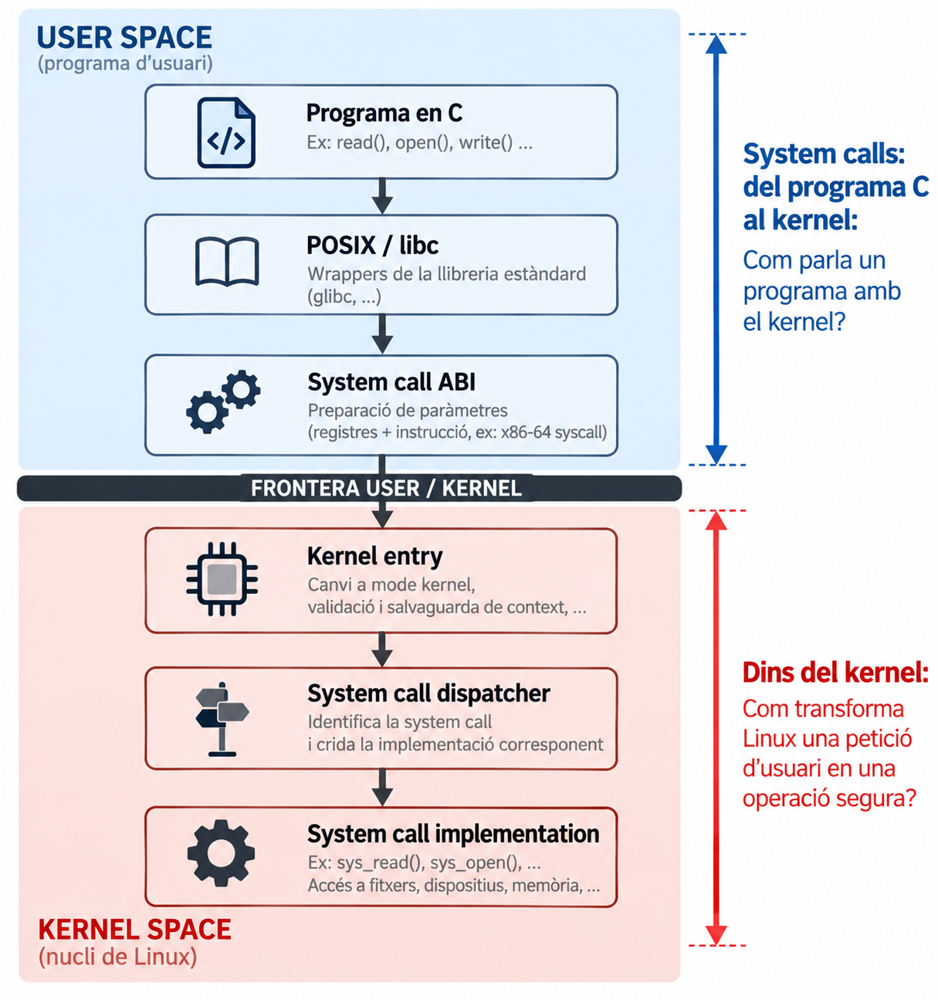
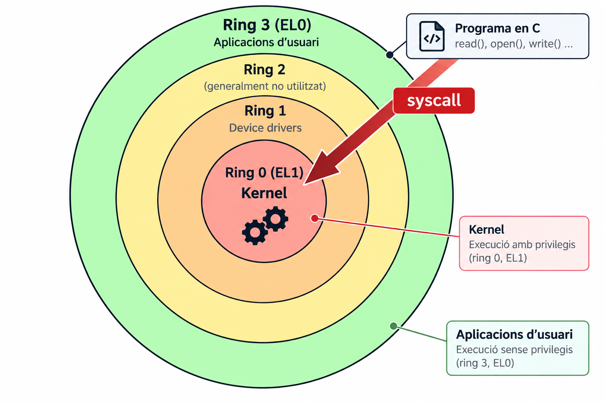
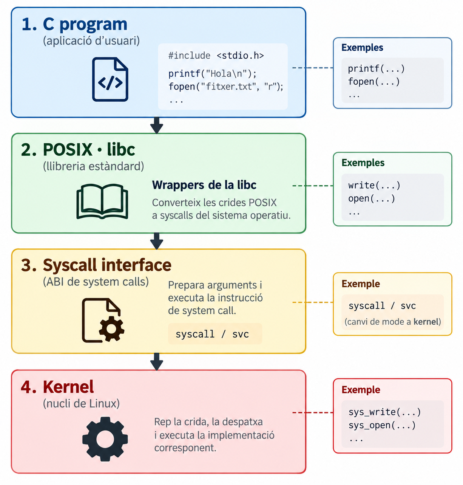
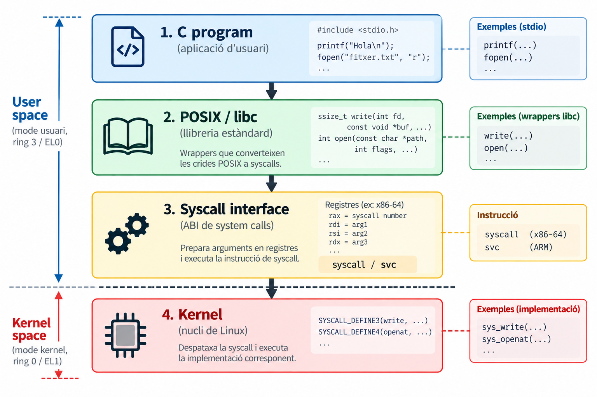
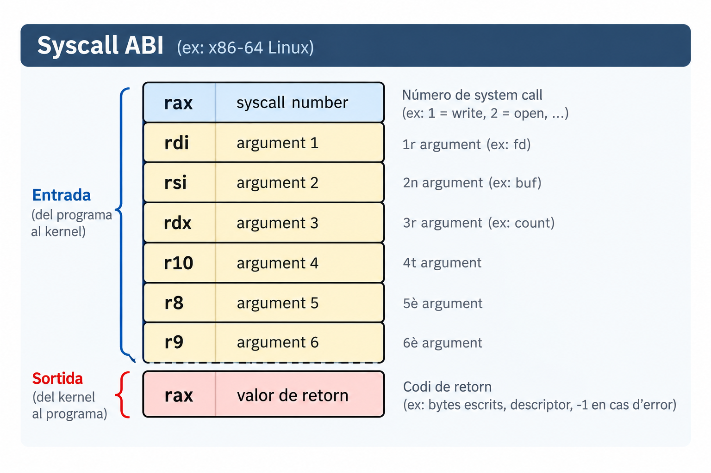
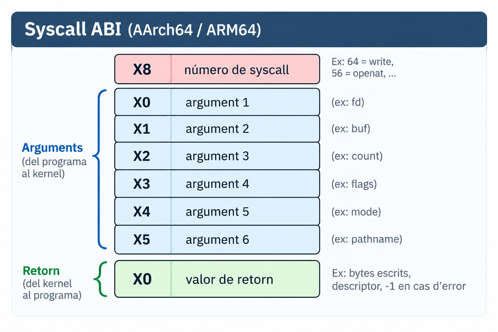
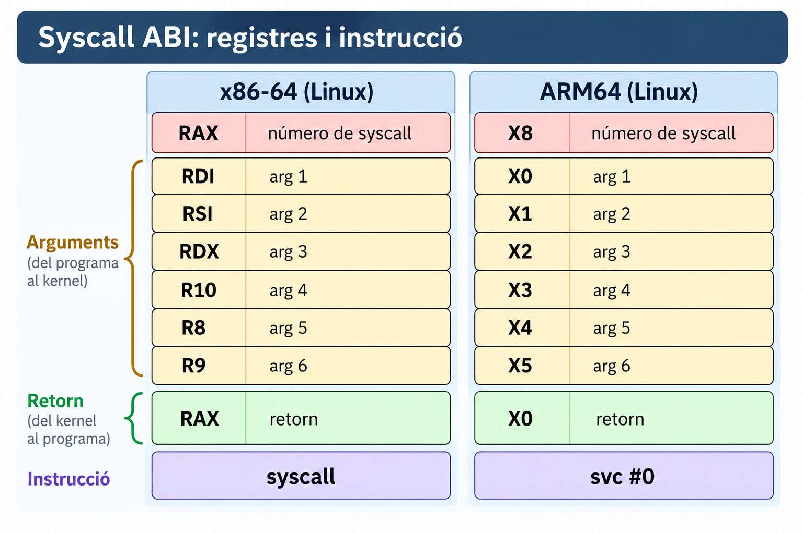
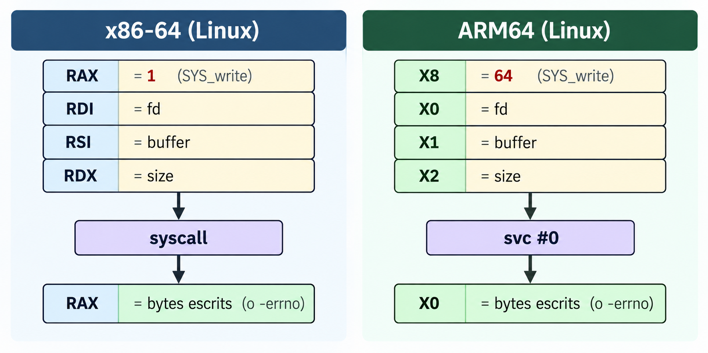
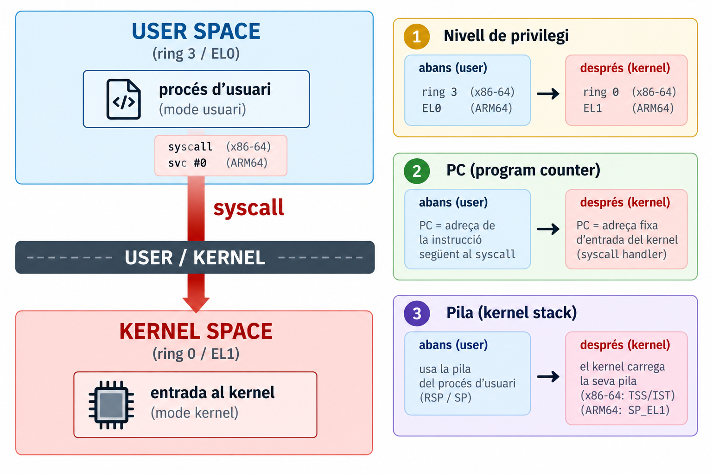

Com parla un programa amb el kernel?
man 2 syscall).syscall / svc.strace i gdb.
Què passa realment quan un programa C necessita un servei del sistema operatiu?
Qui controla realment el fitxer o el dispositiu? Per què el programa no pot, simplement, escriure al disc?
write() des del nostre programa.\[ \text{programa C} \xrightarrow{\text{write()}} \text{kernel} \xrightarrow{\text{sys_write()}} \text{filesystem / driver} \xrightarrow{\text{hardware}} \text{dispositiu} \]
Interfície controlada entre user space i kernel space: els serveis que el kernel ofereix als programes d’usuari.
Sense el kernel, un procés d’usuari no pot gestionar directament dispositius, fitxers ni la memòria física del sistema.

write() és una funció C?Contracte a nivell de codi font: noms, tipus, semàntica. ssize_t write(int fd, const void *buf, size_t count);
Especificació (estàndard) d’una API Unix. Diu què ha d’existir, no com es fa.
Implementació de l’API C (i de gran part de POSIX) per a un sistema concret: glibc, musl…
printf, fopen → libc (stdio) · write, open → wrappers de syscall.
straceQuantes syscalls creus que farà el programa hello?
printf() i bufferingMostra que printf() no és una syscall, sinó una funció de la libc que bufferitza la sortida i només arriba al kernel amb write. Amb strace -e trace=write sobre un programa que fa tres printf, si la sortida va al terminal es veuen 3 write de 8 bytes (una per línia), perquè stdout és habitualment line-buffered. Si la redirigim a un fitxer, en surt un de sol de 24 bytes, perquè llavors és habitualment fully buffered, i el buffer es buida al final.

read, write, close… són serveis del kernel exposats a través de la interfície de syscalls.open() acaba fent openat, fork() acaba fent clone.No n’hi ha prou amb dir write(): el kernel ha de saber quina syscall se li demana.
Enter que identifica cada servei del kernel. El programa el posa en un registre abans d’entrar al kernel.
write és el 1 a x86-64, el 64 a ARM64 i el 4 a i386.Contracte a nivell de codi font: ssize_t write(int, const void *, size_t)
Contracte a nivell de binari: quin registre porta què, quina instrucció entra al kernel, què queda modificat.

Instrucció: syscall
RDI, RSI, RDX, RCX, R8, R9.syscall sobreescriu RCX (hi deixa l’adreça de retorn) i R11 (hi deixa RFLAGS).rcx i r11 com a clobbered.
Instrucció: svc #0 (supervisor call).
Registres, instrucció i números canvien. Exemple: el número 56 és clone a x86-64 i openat a ARM64. No cal memoritzar els registres: cal saber que existeixen i on mirar-los (man 2 syscall).

write() vista des de l’ABI
Aquest exemple és identic a write(1, "Hello\n", 6), però sense passar per la libc. Posa a mà el número de syscall (1) i els arguments als registres RAX, RDI, RSI i RDX, i executa directament la instrucció syscall. Amb strace es veu exactament el mateix write(1, “Hello”, 6) = 6, i això demostra que el kernel no distingeix qui ha preparat els registres, i que l’ABI és un contracte de registres, no de C. La variant syscall(SYS_write, …) fa el mateix amb la funció portable de la libc, sense assemblador.

Què canvia aquí? No només executem una altra funció: canvia el mode d’execució.
No hi ha cap instrucció passa a mode kernel i salta on vulguis. Llavors, com es fa sense trencar la protecció?
syscall / svc canvia el privilegi i salta a una adreça que el programa NO tria.Un únic punt d’entrada, controlat pel kernel: així no es pot saltar al mig de codi privilegiat.
syscall no toca RSP).RCX, R11 a x86-64).Mode switch (user ↔︎ kernel, dins del mateix procés) ≠ context switch (passar a executar un altre procés). Una syscall és el primer, no el segon.
syscall amb gdbLa instrucció dissassemble permet localitzar syscall i break ens permet posar un punt d’aturada just abans. Observeu com s’atura just a la instrucció syscall dins de write(), i abans d’executar-la es veu que rax = 1 (el número de write) i que rdi, rsi i rdx porten els arguments. Amb un stepi s’executa aquesta única instrucció: surt Hello per pantalla, rax passa a valer 6 (els bytes escrits) i rcx i r11 han canviat, perquè syscall els trepitja.
write() és una funció C (wrapper de libc); la transició posterior és el que no és una crida convencional.printf → stdio (libc, amb buffering) → write → kernel; strace ens deixa veure el tram real.syscall (x86-64) o svc #0 (ARM64). Depèn de l’arquitectura: no cal memoritzar-ne els registres, cal saber que existeixen i on consultar-los.